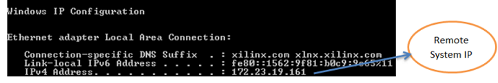

Setting Up the Remote System Environment
- Running hw_server with non-default port (for example: 3122) enables
remote connections. Use the following command to launch hw_server on
port 3122:
- Make sure your board is correctly connected.
- In a cmd window of the host machine, check the IP Address:
